London: A Pilgrimage
 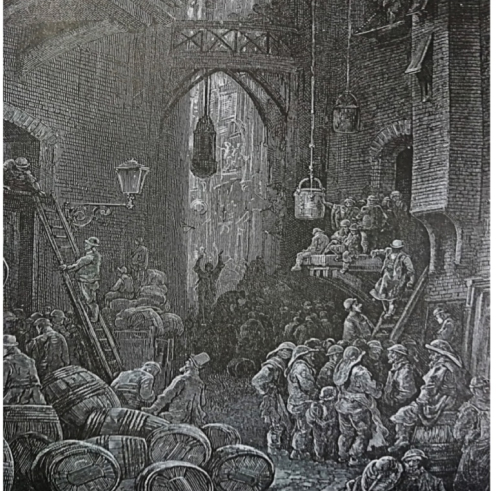
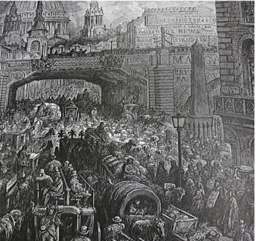
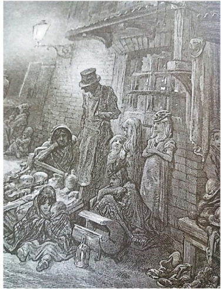
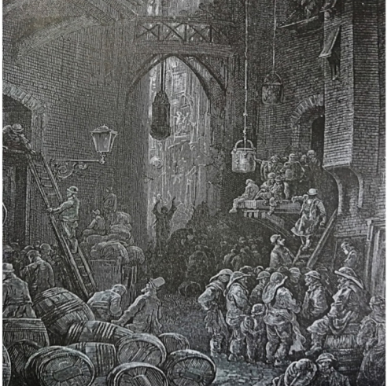
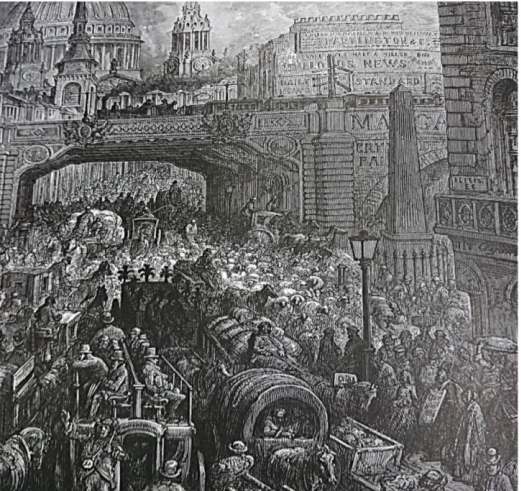
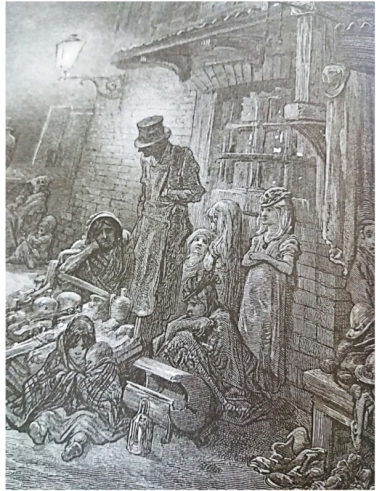
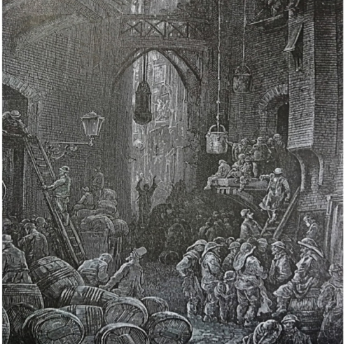
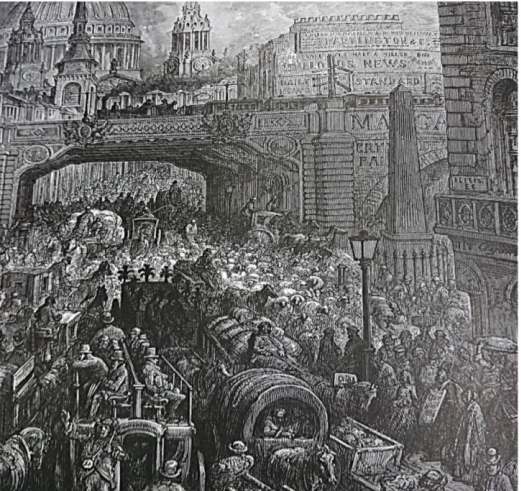
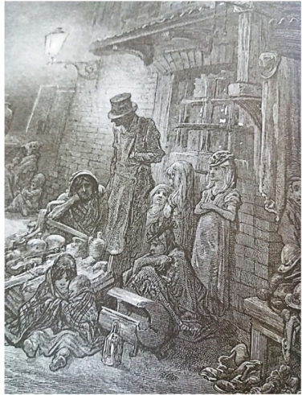
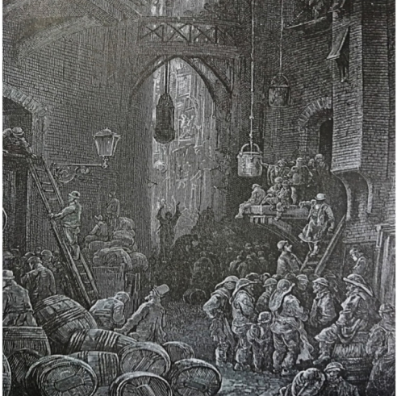
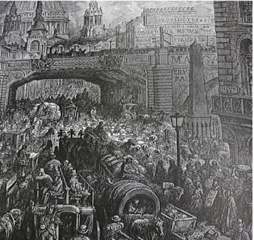
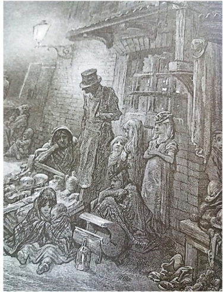
Aconteceu no verão de 1858 por conta da industrialização De 1800 a 1858 a população triplicou 950 mil para 2 milhões e 800 mil, o aumento da população não foi planejado, causando amontoados de fezes de cavalos, pois eram o único meio de transporte na época, os carros foram criados em 1885 na Alemanha, nuvens de fumaça que por conta da densidade impedia das pessoas enxergarem o outro lado da calçada, por isso que as roupas utilizadas pelos londrinos eram em tons mais escuros, chuvas ácidas. A combinação de isso tudo resultava em uma espécie de lama, que se espalhava por toda a cidade. Esgotos existiam apenas em algumas parte da cidade, mas com o objetivo de evitar alagamentos, as pessoas descartavam seus dejetos em fossas de 6 a 8 metros, quando a fossa ficava cheia quem era rico contrava alguém para esvaziá-la, já os pobres mandavam alguma criança jogar os novos dejetos no Rio Tâmisa ou na rua. O mesmo rio fornecia água para banhos, beber e cozinhar para a maioria das pessoas de Londres. Em 1851 foi inventada a descarga de cordinha que foi ligada ao esgoto, mas não adiantava muita coisa porque acabava tudo indo pro rio. No verão de 1858 o rio teve uma baixa em seu nível expondo todas as coisas que foram jogadas nele durante décadas, coisas como fezes, lixo doméstico, lixo industrial, tornando o cheiro mais insuportável ainda. Diversas pessoas morreram, mas não por conta do cheiro, mas porque a maioria da população bebiam a água infectada desse rio essa descoberta foi feita por John Snow. Joseph Bazalgette foi quem resolveu o problema do mau cheiro do rio criando uma rede de esgoto mais eficiente, que jogava tudo no mar,melhorando a qualidade de vida de muitos habitantes da cidade, já que não precisavam carregar fezes até o rio.
No século XVI começaram as leis de cercamento onde pessoas iam para terras de camponeses e privativam elas para a criação de ovelhas e os camponeses imigravam para a capital, isso começou a acontecer com mais frequência nos séculos seguintes como o XVIII e XIV, os camponeses se mudavam para a capital e viravam mão de obra operária, mas muitos não conseguiam emprego fazendo com que eles tivessem uma condição financeira miserável e mesmo os que conseguiam emprego recebiam salários baixíssimos. Sabe aqueles bairros pobres? Era para lá que os camponeses e os imigrantes russos e irlandeses moravam, todos em condições horríveis. Os mercados vendiam produtos de má qualidade e mesmo os que tinham mais condição comiam mal. As fábricas exploravam as pessoas colocando cargas horárias desumanas, como 14 horas de trabalho diariamente, incluindo as crianças que a partir dos 6 anos já trabalhavam e recebiam 1\5 do salário dos adultos. No século XIX aconteceu um surto de cólera, o que afetou essas pessoas com baixa condição e afetou principalmente os trabalhadores de minas, que já traziam de casa o seu almoço contaminado e como eles não tinham meio de higiene no trabalho eles comiam com as mãos sujas e não tinham talheres.